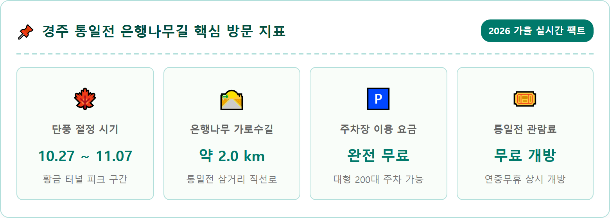
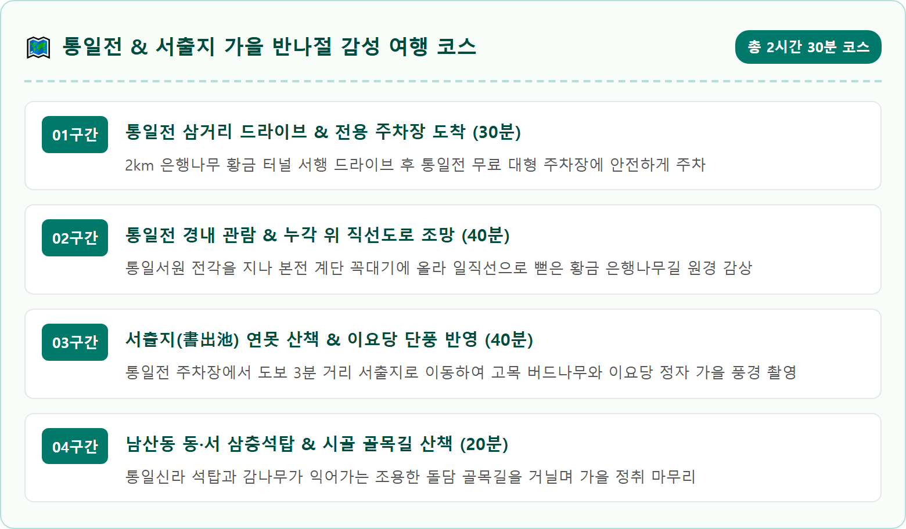
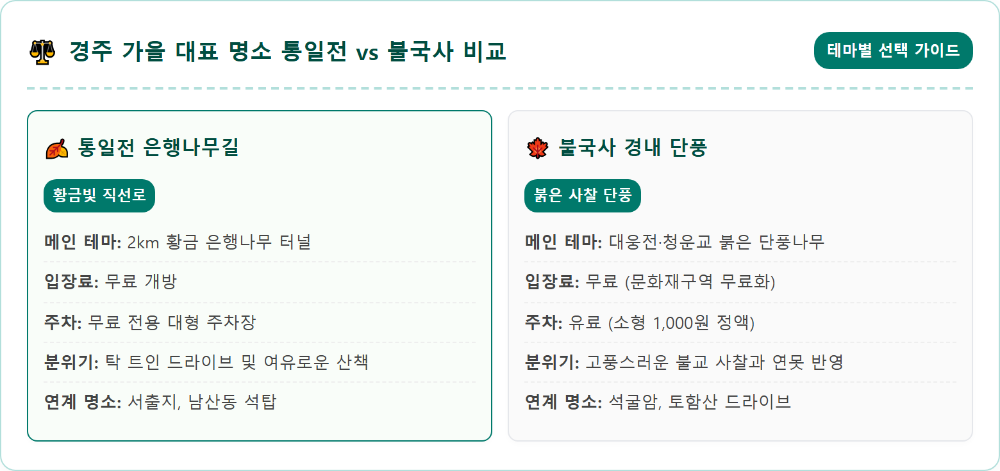
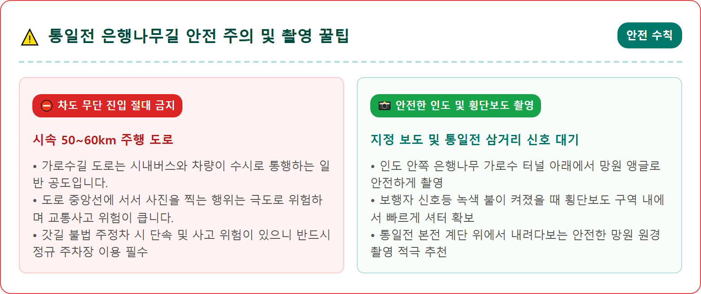
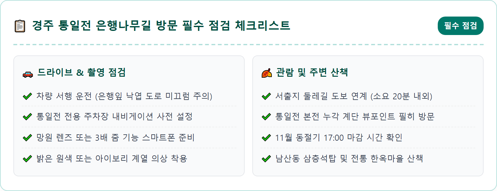
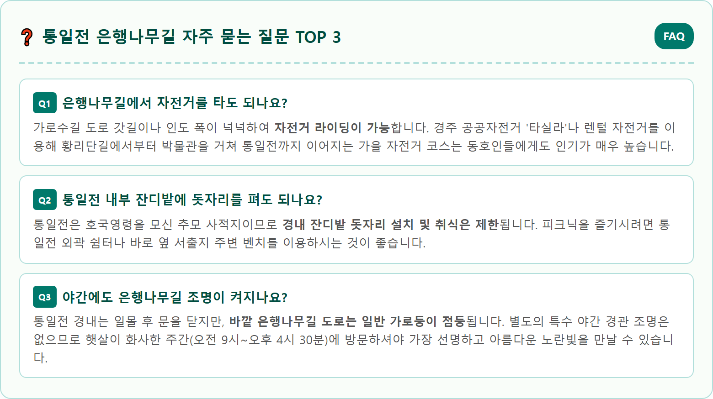

A cinematic, ultra-realistic eye-level shot looking down the famous 2-kilometer straight boulevard of Tongiljeon ginkgo trees in Gyeongju during late autumn. Rows of massive, perfectly shaped ginkgo trees bursting with dazzling golden-yellow autumn foliage lining both sides of the clean asphalt road. Falling yellow leaves gently drifting onto the pavement, forming a golden carpet along the shoulders. In the far background, the traditional Korean entrance gate and the soft ridgeline of Namsan mountain under a crisp blue autumn sky. Warm golden hour morning sunlight casting long shadows. Highly detailed 8k photography, vivid colors, master shot, 1:1 aspect ratio.






| 항목 | 세부 정보 |
|---|---|
| 위치 | 경북 경주시 칠불암길 6 (남산동, 통일전) |
| 가로수길 구간 | 통일전 정문 앞 삼거리 ~ 화랑교육원 삼거리 (약 2.0km) |
| 단풍 절정기 | 10월 27일경 ~ 11월 7일경 |
| 관람 시간 | 하절기(3~10월) 09:00~18:00 / 동절기(11~2월) 09:00~17:00 (연중무휴) |
| 입장료 | 무료 (통일전 경내 및 서출지 전면 무료 개방) |
| 주차 요금 | 무료 (통일전 전용 대형 주차장 약 200대 수용 가능) |
| 대중교통 | 경주고속버스터미널에서 11번 시내버스 탑승 후 '통일전' 하차 (약 25분) |